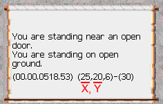
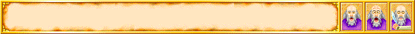
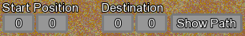
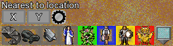
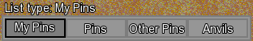

|
irD - Invaders refuge dungeon virtual map v1.4 *Refesh this page to make sure you get the newest version of the page* (Click here to download RAR version) (Click here to download ZIP version) IMPORTANT:-- Do not hand out the files, instead direct people to this page for safety reasons --:IMPORTANT MD2 hash of irD.exe: ae74430cbc0d251750e3a347a784dbb8 MD4 hash of irD.exe: 7804119895510092cb53621e3165b2a4 MD5 hash of irD.exe: eb76d1d25de019fcb8f0a5444b3e3bbf SHA1 hash of irD.exe: 45221fd091d2408f673a71bd784c48efd1730abd SHA256 hash of irD.exe: bf5ebfd584c02c68b7f989f2281f11b2fe651e9869a19a8f133b9e39e45c9431 SHA384 hash of irD.exe: 64983a6137f7381035d1b06f27948c222a3359a086d5a43dbb99801c9cb771f0f5c691474e99381cdb1f36e816724560 SHA512 hash of irD.exe: b8f9268897784b01744286fa5137c6a4f34ce56aaa423d13c095a6e659b70aeee37d6addfcf8a4d336a38ce6a73842cee70b6292d5f78773265b8c9e740c38cf *How to use* Type raid- in drakkar to obtain your coordinates  Controls: Left click to drag the map around Mouse scroll to zoom the map Right click to select the current tile at the mouse location in order to add a comment to that tile (type it in the command box)  Double click (left mouse) to add a map pin, left clicking the map pin allows you to edit it, click the 'new pin' text in the edit box to modify the pins label Right click a map pin from the list to edit the pin without needing to click the pin on the map. Pressing F1 will save any changes Go to a set of coordinates using the Go to Location feature first box is the X coord, second box is the Y coord Create a path from one location to another using the Destination feature First box is the X coord, second box is the Y coord  Find the nearest point of interest using the Nearest to location feature first box is the X coord, second box is the Y coord After entering your coordinates, click the desired point of interest icon Click the gear icon in order to filter out the level of the object if applicable  Map pin list types The first tab 'My Pins' is where the pins you add will appear The second tab 'Pins' is where default pins will appear The third tab 'Other Pins' is where exterior pins from other people will appear when loaded The fourth tab 'Anvils' is where all available anvils will appear sorted by level  Available Toggles; Show/Hide 'Map notes' Show/Hide axis indicator bars Color of the path when drawn Show/Hide 'Map area' labels Show/Hide 'Map area' Show/Hide 'Map pin' labels Show/Hide 'Map pins' Chain search mode for 'Nearest to location' Enter a starting set of coordinates then click your desired object icon, each time the icon is clicked you'll be shown the path to the next nearest object of that type In order to share your map pins, make a copy of the file 'Map_Pins.data' located in the Data folder. Rename the copy to any name desired so long as the extension '.data' is not changed. Share that file with who ever you wish to share your map pins with. In order to use map pins shared with you, place them in a folder called 'OtherPins' (it is created when the program is first started) After starting up irD, the shared pins will appear in the 'Other Pins' category More features will come in new versions, check back often and feel free to share feedback! Lastly if you'd like to donate to buy me a coffee or two, use the donate button on the home page or click the button below, thanks! |